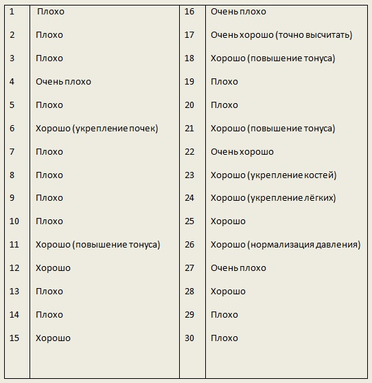

Магия Крови
Её мерцающий цвет самый прекрасный из всех цветов в мире. Её манящий запах словно выдёргивает из бездонного сна. Её бархатный вкус рождает бушующий экстаз. Это ваша самая большая страсть и боль всей вашей жизни. Она бесценна. Как и сама жизнь. Она и есть Жизнь во плоти. В ней содержится ответ на главный вопрос: кто вы есть на самом деле?
То, что кровь совершенно особенная жидкость, было известно ещё до того, как её свойства описали с помощью медицинских терминов. Поразительно, насколько разнообразны функции, которые она выполняет, обеспечивая жизнь организма: разносит кислород и питательные вещества по всему телу, передаёт информацию посредством гормонов и очищает ткани. Для людей этот особый сок значит так много, что большинство из них чувствует дрожь при её виде. Особенно если она своя. Нередко этот страх напрасен, потому что организм без ущерба может отдать немного крови, и это известно каждому, кто хоть раз её сдавал. Сейчас в сознании людей потеря крови ассоциируется со слабостью и изнеможением. Это совсем неверно, если речь идёт о незначительной, целенаправленной потере крови. С древних времён к кровопусканию, как к самому верному средству исцеления относились с особым чувством веры. В наши дни этот способ лечения воспринимается больше как курьёз средневекового знахарства. Однако, до сих пор неизвестно, почему небольшая потеря крови столь благотворно влияет на человека. Почему потеря нескольких капель способна оказывать такое сильное воздействие, которое не объяснить ни с физической, ни с химической точки зрения? Когда-то искусство кровопускания было окружено тайной – вероятно потому, что передавалось оно только от одного человека к другому, устно или письменно. Можно с уверенностью сказать, что процедура всегда проводилась очень тщательно, с сознанием высокой ответственности, в точно выбранное время, за исключением тех крайних случаев, когда нужный срок соблюсти было невозможно.
Однако, если строго соблюдать правила и обоснованно выбирать время, кровопускание становится одним из самых успешных методов профилактики и лечения, очистки и детоксикации организма – эффективным и действенным для многих физических, психических и душевных расстройств. Для процедуры существуют хорошие и плохие дни. Если проводить её в плохие, то появляется слабость во всём теле. Дача крови донором не является, в строгом смысле слова, кровопусканием, особенно, если донор дарит её сангвинару. Во-первых, объёмы кровопотери значительно меньшие. Во-вторых, в данном случае необходимо учитывать возникновение канала связи: сангвинар-донор. Следовательно, воздействие на отдающий кровь организм должно быть слабее, как в положительную, так и в отрицательную сторону. Но не всё так просто. На станциях переливания крови никогда не отказываются от первых 50 мл. А ведь эта кровь содержит информацию о физических нарушениях, болезнях и всех прочих негативных моментах. Поэтому, будучи введённой в кровеносную систему обычного человека, она может вызвать у реципиента сходную симптоматику. Реципиент всегда получает «кота в мешке». Если обычный человек станет достаточно часто пить кровь, такая практика реально способна серьёзно нарушить нормальную работу внутренних органов, не приспособленных к такому «питанию». Внутренняя химия сангвинара имеет существенные отличия. Другой кислотно-щелочной баланс, иное ферментное равновесие, иные механизмы усвоения питательных веществ. Из вышесказанного получается, что сангвинару эта, по сути, вредная кровь, идёт только на пользу.
Почему уже после двух-трёх раз проведённой процедуры кормления санга, донор чувствует прилив свежих физических и творческих сил, улучшение настроения и повышение качества сна? Правильно, санг не только освобождает своего донора от лишней крови, но и вытягивает из него негативную энергию. Сангвинар – всё же настоящий вампир. А вампиры – существа ночные. Им нужна энергия Тьмы. Она – их главная пища. Когда есть недостаток этой энергии – в вампире просыпается сущность, которую многие называют Зверем. Но этот Зверь не есть олицетворение зла. Он питается темной энергией, потому что создан для того, чтобы брать ее и перерабатывать в себе, он приобщается к энергии человека для того, чтобы эффективно действовать. Известно, что вампиры более миролюбивы, чем большинство людей. Первые с гораздо большей симпатией относятся к животным и вообще ко всей природе. Почему? Потому, что они как нельзя ближе к ней. Следуя своей внутренней Природе – они становятся частью общей. Многие люди же окружающую природу всячески используют и попирают её права, а свою личную извращают. Однако не будем отвлекаться.
Мы выяснили, что связь сангвинар-донор обоюдополезна для обеих сторон. Она действительно является отличной формой симбиоза. То есть, говоря иными словами, хорошо обоим. Один освобождается от всего лишнего, другому это лишнее жизненно необходимо. Однако такая связь будет близка к проиллюстрированному идеалу только при соблюдении необходимых принципов. Их можно условно разделить на две группы: объективные (обстановка – время, место, детали) и субъективные (установка самого вампира, так и его донора).
Пока связь только устанавливается, для закладывания её фундамента требуется правильно выбранное время. Тогда само тело донора, осознав полученную пользу, будет хотеть повторения опыта снова. Чтобы иметь возможность произвести точные подсчёты, выясните сначала день и точное время последнего новолуния. И то и другое есть в календарях. В них не должно быть поправок на летнее время. Подсчёты осуществляются следующим образом:
- если последнее новолуние наступило после 12 часов дня (13 часов в летнее время), то этот день считается 1-м, следующий – 2-м и т.д.;
- если последнее новолуние наступило после 12 часов дня (13 часов в летнее время), то этот день не считается, следующий – 1-й и т.д.;
Иногда оказывается, что 30-й день и день следующего новолуния совпадают. Если в этот день новолуние наступает до 12 часов дня, то 30-й день выпадает, он снова оказывается 1-м. Иными словами, счёт дней начинается всегда с новолуния. Выяснив, какой день считается 1-м, можно определить по нижеприведённой таблице, когда можно проводить процедуру.

Некоторые дни в году абсолютно не подходят для дачи крови, как бы они не характеризовались по таблице. Это 17 июня, 1 августа и последние дни сентября.
Впоследствии, когда канал связи окрепнет, вампир сможет интуитивно чувствовать, когда его донор готов к следующему сеансу. Здесь уже можно не так строго придерживаться каких-либо таблиц и прочих условностей. Тут начинают работать законы вашей общей системы. Вы становитесь особым образованием со своими собственными правилами. Хотя, признаться, чаще всего бывает так, что если у вампира несколько постоянных доноров, и он подпитывается от них по-очереди, а, следовательно, не чаще одного раза в неделю от одного, то донор сам начинает желать этой встречи раньше срока. Представьте: санг особо не голоден, а донор прямым текстом спрашивает, не хочет ли его «вампирёныш» покушать. Естественно, нормальный вампир тут же почувствует желание. Иногда мягко предложить донору осуществить действо попозже бывает существенно необходимо для его же блага. Вампир должен использовать власть своего холодного разума. Он не обязан носиться со своим донором, как с писаной торбой, но и демонстрировать даже лёгкое неудовольствие без веских причин ему не следует. Говорю это на всякий случай, так как истинный вампир, будучи в любом настроении, сможет блестяще подавить в себе негатив и направить на своего донора самые позитивные флюиды. Практически у вампира это происходит на автомате. Только что он излучал мрачную холодность, а вдруг подошёл к нему какой-то человек, и оба демонстрируют почти видимое глазу свечение. Словно воздух между ними искрит. Однако, это не воздух. Это магия крови, которой обладают все настоящие вампиры.
Своего донора санг выбирает тщательно. Лучше всего, когда им становится человек, с которым вампир знаком достаточно давно и которому доверяет, как себе. Качественная связь – связь долговременная. Эпизодические или незапланированные кормления от других людей могут составлять часть опыта. Но они – мера вынужденная.
Как вампир будет охмурять своего потенциального дарителя жизни, это его собственное дело. Я лично придерживаюсь условий полной добровольности и максимального понимания того, что происходит с обеими сторонами. О безопасности, думаю, нет смысла напоминать. Психологическая настройка превалирует. Вампир должен позаботиться, чтобы его донор максимально расслабился. Нужно успокоить кровь и дать ей течь свободно. Примириться с действительностью. Действовать непринуждённо, без суеты и лишних ожиданий. Первый опыт запоминается на всю жизнь. И так, как он был первым, то наверняка вы могли допустить какие-либо огрехи. Признаться первому человеку в вашей жизни в том, что вам физиологически требуется кровь, и вы намереваетесь сделать его своим донором, действительно нелегко. Нелегко, если кровь вам необходима реально. Поэтому для первого опыта советую выбирать «цель» безукоризненно, не торопиться, чтобы в случае отказа информация не была распространена. Но, о чём я? Ведь, все эти факторы вы проверите заранее: например, боится ли ваш друг уколов (порезов), как он вообще относится к донорству, смог бы он быть донором для вас, нет, не совсем обычным и т.д.
Знаете, что ответил первый человек на мою сбивчивую речь и предложение попробовать стать моим? «…Ни фига себе… Круто! Давай. Мне не жалко. Сейчас хочешь?» Это было как во сне. Казалось, что мир поглотило землетрясение, а я его эпицентр. Поиск кандидатуры, обдумывание деталей, взвешивание всех «за» и «против», выбор момента, умение правильно преподнести информацию и сделать предложение – всё это казалось сверхзадачей, выходящей из ряда вон, а в итоге сделалось таким простым шагом.
Поверьте, следующие попытки будут проходить всё более гладко, а методы поиска нужных людей будут всё более отточенными. Говоря об ощущениях, которые сопровождают процесс питания для вампира – это весьма индивидуально. Я могу сравнить действие крови с действием дорогих духов.
В первые часы действует «головная нота»: организм вампира усваивает бесценный дар. Если это новый канал, процесс может затянуться на сутки. Если старый, проверенный – усвоение происходит тем быстрее, чем грамотнее были проведены все вышеуказанные процедуры. Это период, когда одна и та же кровь находится в двух организмах. Это время, когда вампир чувствует себя человеком более, чем когда-либо. Его температура повышается. Это приятное тепло. Живое. Не иссушающее. Если до этого была Жажда, то все её проявления исчезают мгновенно. Тело, будто магнит, вдруг поменявший свои полюса. В этом отношении интересно отметить, что резус-фактор тоже может играть роль. Например, если у санга «-», то донор с «-», конечно, будет ему идеально подходить, так как усвоение будет происходить быстрее. Но если донор с «+», то уровень впитанной энергии может быть больше (противоположности притягиваются:), хотя и усваиваться она будет подольше. Если совпадают группа и резус – считайте себя счастливчиком. При минимальных усилиях отдача будет максимальной. Такой донор может быть идеальной кандидатурой на роль вашего первого дарителя.
Когда наступит действие «ноты сердца» крови – вы почувствуете сами. Это время, когда эйфория уступает своё место чувству спокойствия и глубокой наполненности. Ровное состояние позволяет теперь осознать, что вы приобрели в результате происшедшего. Полученный потенциал явственно ощутим. Температура плавно снижается до вашей обычной. Это самое продуктивное состояние. Особенно это касается творческих сил. Хочется творить и созерцать. Вы словно один на один с миром, а между вами нет никаких противоречий. Всё есть единый безграничный слиток. Без малейшего изъяна. Вы сильны физически и духовно, как никогда. Это уравновешивает и воспитывает вас. Отсутствие крайностей. Истинное «сердце». Длительность данного периода зависит от личной силы вампира. Отсутствие раздражающих факторов, способных нарушить нормальное течение процесса, также приветствуется. Имеется в виду, что не следует такой сильный момент растрачивать на погрязание в том, что вас ослабляет и рассеивает.
Но самый любопытный этап наступает далее. В нашем сравнительном примере – это «нота шлейфа». Самая тонкая, экзотическая и магическая. Попробуйте подгадать так, чтобы она выпала на полнолуние. Это будет интересный опыт. Здесь всё так неоднозначно и вариативно, так лично и интимно, что подробности освящать не комильфо, да и нет смысла. В целом, этот период предшествует возникновению и росту Жажды. Он словно готовит к ней. Магнетизм вампира резко возрастает. Он ещё не голоден, но уже почти на пороге. Его тело, словно фабрика по производству феромонов. В такие моменты про него легко можно сказать, что он способен съесть взглядом. Если источник ближайшего питания заранее известен, то вампир несравненно более уверен. Он может позволить себе насладиться возрастающим аппетитом, имеющим особую природу. Он похож на дикого хищника, вроде бы сытого, но кто знает наверняка? Момент, когда начинается Жажда, наступает внезапно. Вы вдруг ловите себя на мысли, что вам необходима кровь. В принципе, это не такая уж и трагедия, если вы не получите её вскорости после данного озарения. Несколько дней вас не убьют, хотя чувство беспокойства будет возрастать. Необходимо как можно более точно знать свою пищевую цикличность. Проверить, как она изменяется в зависимости от фаз луны и времени года. Все эти знания позволят вам быть более осведомлёнными о лимитах своих возможностей, а также укажут векторы их развития.
Такое состояние, как «перекушал», как ни странно, вполне реальная вещь. Чаще всего оно может случиться с новичком. Если вы попробуете питаться несколько дней подряд, то вы поймёте, о чём я. Разумеется, имеется в виду питание сангвинара. Если вампир имеет способность подпитываться энергетически, то лишняя порция чистой энергии не повредит. Если, это, разумеется, энергия чистая. Человеческая энергия такой практически не бывает. Энергия первоэлементов, минералов, растений, животных и полученная из особых природных явлений (гроза или затмение) – первозданная и чистейшая. Её переизбыток приносит только пользу. В случае питания кровью вампиру придётся иметь дело не с одним донором. Следовательно, энергия будет бурлить, как в котле. Подобный нон-стоп особой силы не прибавит, скорее, сделает вас хаотично гиперактивным. Если же вы не новичок, то наверняка проворачивали и не такое. В любом случае, экспириенс – это весомый аргумент. Пробуйте всё, что не навредит вам или окружающим. Повышайте личный магнетизм. В жизни так же, как и в игре – ближайшая цель – получить level up, иначе, зачем жить? А у вас есть бесценное богатство: вы сами. Настоящая живая загадка, не разгаданная до конца никем.
Жизнь позволяет сделать следующий шаг только после того, как мы без оговорок принимаем и любим каждую малейшую частицу приобретённого опыта, всё, что суждено – любые события, беды и радости. Подобное ищет подобное. И преодолеть подобное можно только подобным. Мы будем совершать одни и те же ошибки до тех пор, пока не «излечимся» от них, принимая истину. Пока мы сражаемся с чуждым нам, оно чуждым и будет, сражаясь с нами. Если же мы заключим его в объятия и вберём в себя, оно сделается нашим и растворится в рассудке. Рассудок же в любой момент снабдит нас всем необходимым для того, чтобы мы смогли добраться до сути предмета и решить любую проблему. Таков механизм жизни.
Жизнь движется только так, а не иначе. Мы включены не в процесс обучения, а в процесс открытия. Мы обучаемся, не приобретая знания, а открывая для себя те связи, какие существуют с момента сотворения мира. Во всей вселенной не найти ни единой взаимосвязи, которой не существовало бы в нас самих. Да и есть ли что-нибудь такое, чего мы ещё не знаем, чему следует учиться? Чем овладевать, если мы и так обладаем всем? Самое главное – сорвать пелену с собственных глаз.


Автор: Abyah.
Выложено специально для realvampires.do.am
(с) Библиотека о настоящих Вампирах
realvampires.do.am
[Наверх]